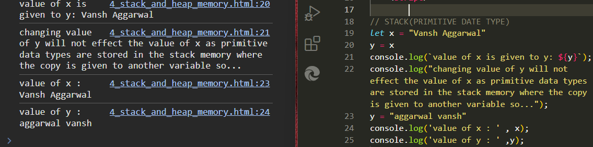
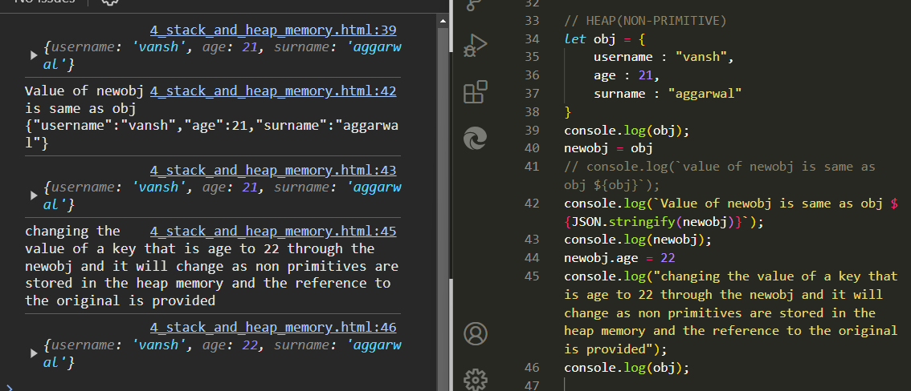

JavaScript Engines Have Two Places to Store Data
1) Stack
2) Heap
* Stack : It is a data structure used to store static data. Static data refers to data whose size is known by the engine during compile time.
In JavaScript, static data includes primitive values like strings, numbers, boolean, null, and undefined. References that point to objects and functions are also included.
A fixed amount of memory is allocated for static data. This process is known as static memory allocation.

* Heap : It is used to store objects and functions in JavaScript. The engine doesn’t allocate a fixed amount of memory. Instead, it allocates more space as required.
Note: When you use a JavaScript object in a template literal (i.e., with backticks ``), JavaScript converts the object to a string using the object's toString method.
For plain objects, this results in the string "[object Object]".
To print the object with its keys and values within a template literal, you can use JSON.stringify to convert the object to a JSON string representation:

Home page